Orisym
Navega con Confianza
Aprendizaje, pruebas y catálogo de símbolos de orientación


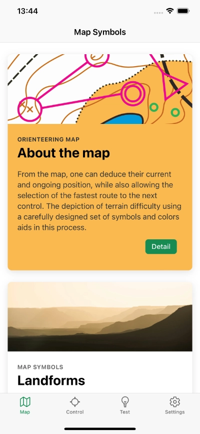
 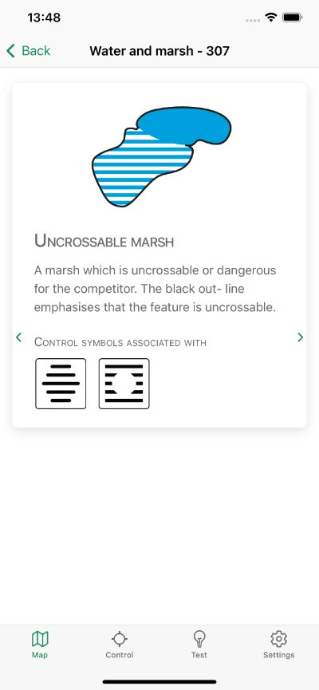
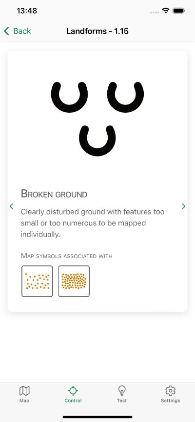
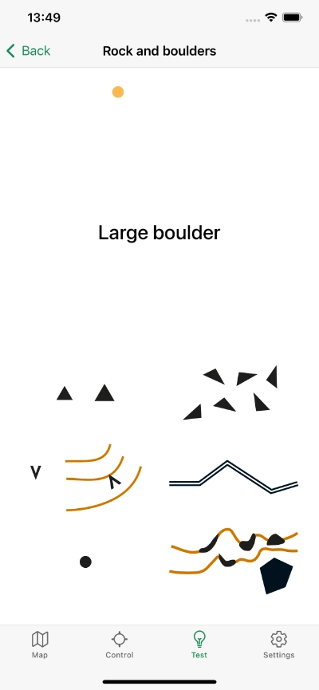
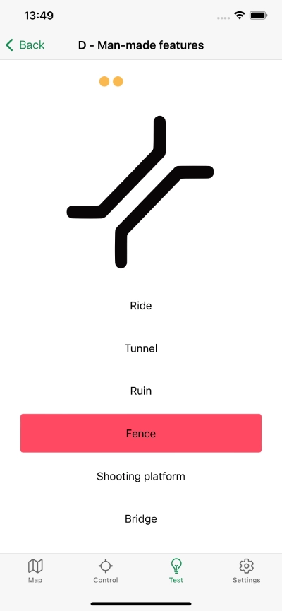
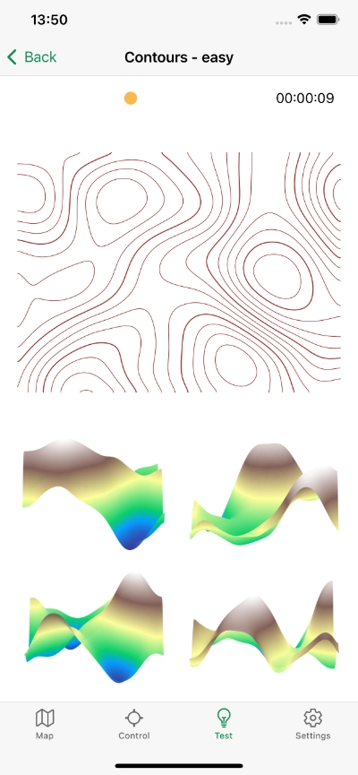
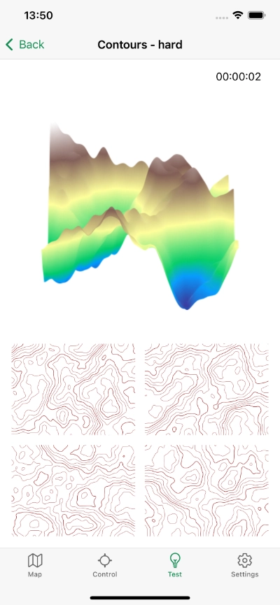
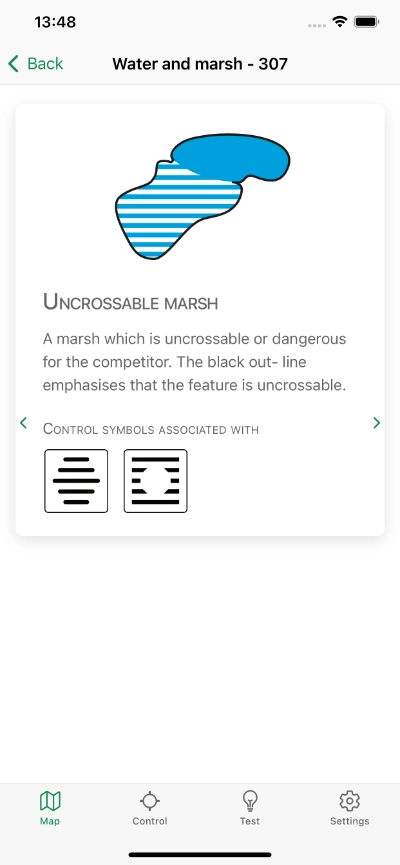
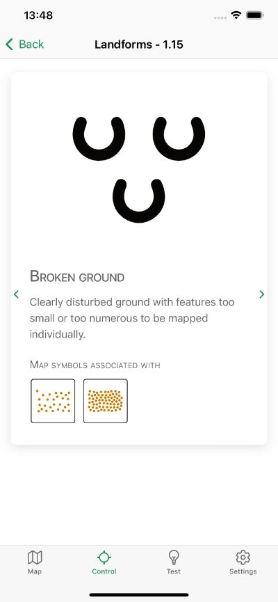
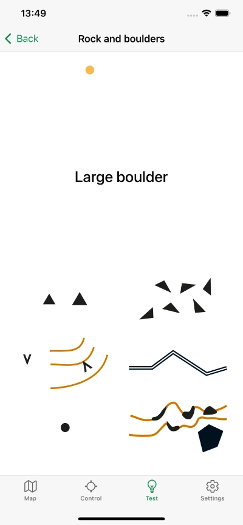
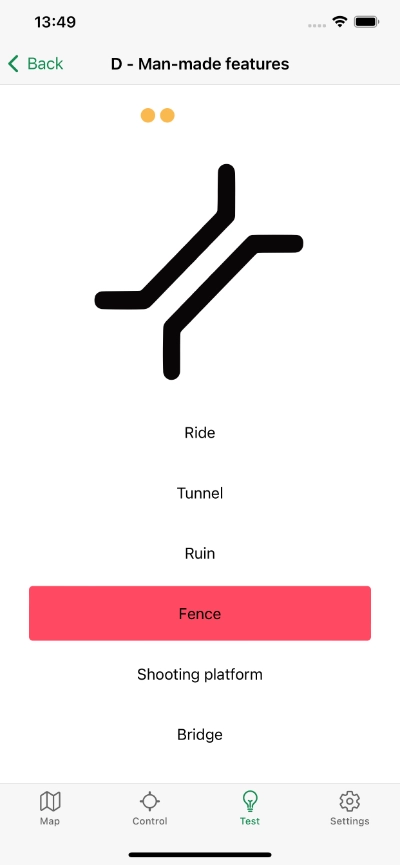
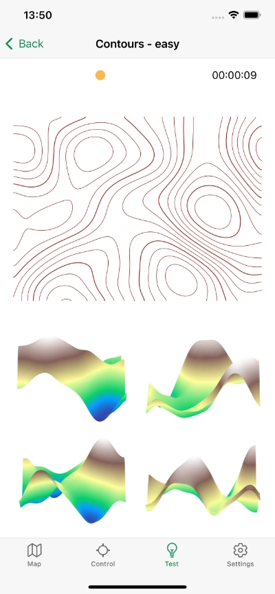
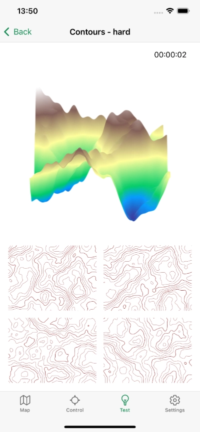
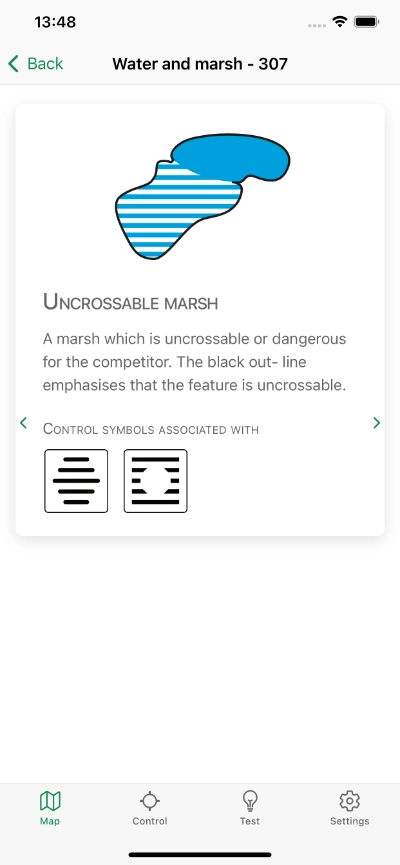
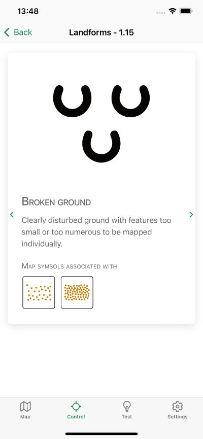
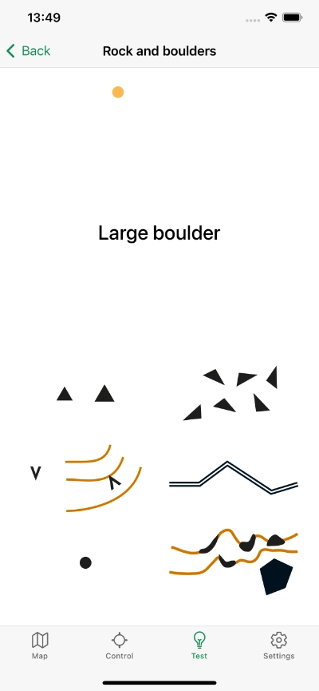
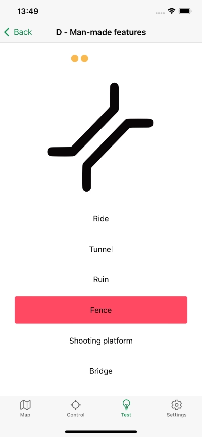
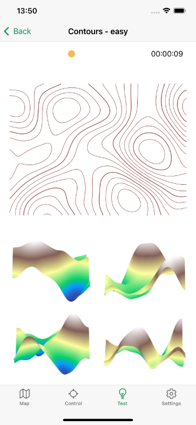
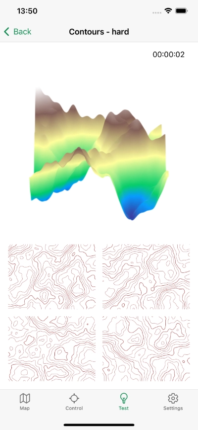
¿Por qué Orisym?
- Aprende el significado de cada símbolo de orientación en detalle
- Mediante pruebas de conocimiento, descubre qué tan bien los conoces y mejora tus habilidades
- El catálogo de símbolos de mapas y símbolos de ubicación de controles proporciona descripciones detalladas
- Descubre las conexiones entre diferentes tipos de símbolos
- Mejora tu orientación espacial reconociendo el terreno mediante curvas de nivel
- La aplicación funciona sin conexión, no requiere internet